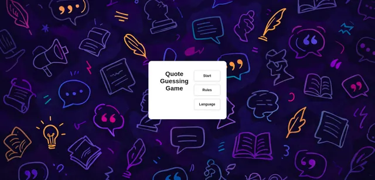

Linux | systemd | Red Team
systemd-backdoor
Backdoor Linux basée sur systemd pour la persistance.
GitHubPortfolio
Retrouvez ici une sélection de mes projets, allant de la cybersécurité à du développement web et logiciel.
Projet phare
Vidoq est un outil pour auditer votre empreinte numérique. Pour vous aider à comprendre et améliorer votre sécurité en ligne.
Cybersecurity
Linux | systemd | Red Team
Backdoor Linux basée sur systemd pour la persistance.
GitHubCVE-2017-0143
Rapport d'évaluation de sécurité sur EternalBlue.
GitHubPython | OAuth
Wrapper Python pour automatiser les attaques Device Code Phishing sur les flux OAuth.
GitHubScanner | CVE
Outil de détection et d'analyse de la vulnérabilité CVE-2025-36911 touchant vos appareils bluetooth.
GitHubCréations et expérimentations


HTML | CSS | JS
Un site de vibe coding pour demander à l'IA de générer du code. Visualisation du résultat, audit du code possible.
TesterC++ | Rendering
Moteur de rendu 3D utilisant la technique de raytracing pour générer des formes.
GitHubC++ | Python | Network
Projet de fin de 2ème année d'études: jeu en réseau avec serveur, client graphique et IA.
GitHub